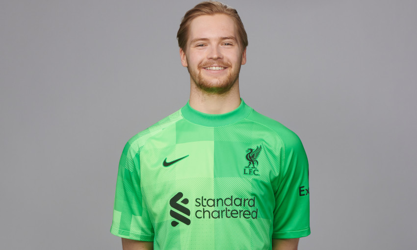

Virgil van Dijk detailed the disappointment Liverpool felt at ceding a two-goal lead in Sunday’s 2-2 Premier League draw with Chelsea.
The visitors had taken firm control of the clash at Stamford Bridge through strikes by Sadio Mane and Mohamed Salah in minutes nine and 26 respectively. But the Blues hauled themselves level before half-time as Mateo Kovacic converted a stunning volley and Christian Pulisic then broke through to send a finish beyond Caoimhin Kelleher. Van Dijk felt Liverpool might still have gone on to claim victory in the second period and insisted the team will now aim to build on the point they took in their forthcoming fixtures. Read the No.4’s post-match interview with Sky Sports below… On whether the feeling is that Liverpool ‘let it slip’ today having been 2-0 up… Yeah obviously if you are 2-0 up you don’t want to concede that close to half-time and give them the momentum to get back into the game. Unfortunately, it happened. A fantastic strike [by Kovacic], you have to give him credit for that. And obviously that gives them, like I said already, momentum. They scored the second goal with a good feeling into the break. Obviously we tried not to panic, created fantastic moments still in the second half, even when we were at times under pressure. I think for the outside world it was quite a good game to watch, but we came here for three points and unfortunately we didn’t get it.
On the quality on show from both sides… They have an amazing team but so have we. I always had a feeling – we were under pressure at times but we defended well as a team I think, didn’t give big chances away – that we could have scored maybe the 3-2 in the end. But unfortunately it didn’t happen, we take one point and we have to build on this again after the disappointment that we had last week. That’s what we should do. On having praise for Kelleher’s performance… Yeah, definitely. I’m quite a big fan of him. He is a fantastic goalkeeper. He is learning from the best, in my opinion, with Alisson. His presence is good, he is confident on the ball and he is making good saves as well. That’s good and we need him right now because of obviously the COVID cases. Unfortunately, we conceded two but the first one he can’t really do anything about it. We need him for the next games as well. On whether it’s ‘difficult to believe’ Manchester City can be caught at the top of the table… It’s never difficult to believe. It’s a big gap, so they have the title maybe to lose at the moment. But anything can happen still. We have been there where we had a gap, we were in front and we gave it away. So, anything is possible. We will focus on ourselves, Chelsea will focus on themselves. We just have to get results, play good football and win games. It sounds pretty easy but it’s tough, as you see today as well.
Read the full article on Liverpools official page!